소음진동기사(구) (2014-09-20 기출문제)
1과목: 소음진동개론
1. 음의 발생은 고체음과 기류음으로 분류할 수 있다. 다음 중 주로 기류음에 해당하는 것은?
- 스피커에서 나오는 소리
- 폭발음
- 북소리
- 기계의 마찰에 의한 소리
(정답률: 알수없음)

2. 2개의 작음 음원이 있다. 각각의 음향출력(W)의 비율이 1:25일 때 이 2개의 음원의 음향파워레벨의 차이는?
- 11dB
- 14dB
- 18dB
- 21dB
(정답률: 알수없음)
3. 음파의 굴절에 관한 설명으로 옳지 않은 것은?
- 음파가 한 매질에서 다른 매질로 통과할 때 구부러지는 현상이다.
- 대기 온도차에 의한 굴절일 경우 주로 주간에는 상공쪽으로 굴절한다.
- 풍속차에 의한 굴절일 경우 음원보다 상공의 풍속이 클 때 풍하측에서는 상공쪽으로 굴절한다.
- Snell의 법칙에 의하면 굴절 전과 후의 음속차가 크면 굴절도 커진다.
(정답률: 알수없음)
4. 인간의 귀는 순음이 아닌 여러 가지 복잡한 파형의 소리를 들어도 각기 순응의 성분으로 분해하여 들을 수 있다는 음색에 관한 법칙은?
- 매스킹의 법칙
- 웨버 훼이넬의 법칙
- 옴 헬므홀쯔의 법칙
- 큐잉의 법칙
(정답률: 알수없음)
5. 60폰(phon)인 음은 몇 손(sone)인가?
- 2
- 4
- 8
- 16
(정답률: 알수없음)
6. 길이가 약 58cm인 양단이 뚫린 관이 공명하는 기본음의 주파수는? (단, 15℃ 기준)
- 96Hz
- 126Hz
- 190Hz
- 293Hz
(정답률: 알수없음)
7. 소음의 거리 감쇠에 관한 일반적인 사항으로 가장 거리가 먼 것은?
- 습도가 낮을수록 소음의 거리 감쇠 효과가 커진다.
- 주파수가 낮을수록 소음의 거리 감쇠 효과가 커진다.
- 기온이 낮을수록 소음의 거리 감쇠 효과가 커진다.
- 무한 길이 선음원의 경우 거리가 2배 멀어질 때마다 음압레벨은 3dB씩 감쇠한다.
(정답률: 알수없음)
8. 지향계수가 2.5이면 지향지수는?
- 3.0dB
- 4.0dB
- 4.8dB
- 5.5dB
(정답률: 알수없음)
9. 진동파 및 진폭의 거리감쇠에 관한 설명으로 옳지 않은 것은? (단, r은 진동원으로부터의 거리)
- S파보다 P파의 전달속도가 빠르며, 이 P파는 구면상태로 전파할 때 지표면에서는 r2, 땅속에서는 r에 반비례하여 감쇠한다.
- 표면파에는 러브(L)파가 레일리(R)파가 있다.
- R파는 원통상태로 전파되며 지표면에서는 √τ에 반비례하여 감쇠한다.
- 횡파는 구면상태로 전파할 때 지표면에서는 r2, 땅속에서는 √r에 반비례하여 감쇠한다.
(정답률: 알수없음)
10. 음의 용어 및 성질에 관한 설명으로 옳지 않은 것은?
- 음선(soundray)은 음의 진행방향을 나타내는 선으로 파면에 평행하다.
- 파면(wavefront)은 파동의 위상이 같은 점들을 연결한 면이다.
- 평면파(plane wave)는 긴 실린더의 피스톤 운동에 의하여 발생하는 파와 같이 음파의 파면들이 서로 평행한 파를 말한다.
- 파동(wave motion)은 매질 자체가 이동하는 것이 아니고 매질의 변형운동으로 이루어지는 에너지 전달을 말한다.
(정답률: 알수없음)
11. 15℃의 공기 중에서 400Hz 음의 파장은?
- 70cm
- 75cm
- 80cm
- 85cm
(정답률: 알수없음)
12. A작업장 내에서 85dB의 소음을 내는 기계가 3대, 90dB의 소음을 내는 기계가 2대가 있을 때, 같은 장소에서 동시에 이 기계들을 가동했을 때의 합성음레벨은 약 몇 dB인가?
- 86
- 90
- 95
- 99
(정답률: 알수없음)
13. 소음이 신체에 미치는 영향으로 거리가 먼 것은?
- 맥박수와 호흡회수 증가
- 타액 분비량의 증가, 위앤산도 저하
- 혈압상승, 위 수축운동 감퇴
- 혈당도와 백혈구 수 감소
(정답률: 알수없음)
14. 추를 코일스프링으로 매단 1자유도 진동계에서 추의 질량을 2배로 하고, 스프링의 강도를 4배로 할 경우 작은 진폭에서 자유진동주기는 어떻게 되겠는가?
- 원래의 1/√2
- 동일
- 원래의 √2
- 원래의 2배
(정답률: 알수없음)
15. 다음 중 상호 연결이 맞지 않는 것은?
- 영구적 난청:4000Hz 정도부터 시작
- 음의 크기레벨의 기준:1000Hz 순음
- 노인성 난청:2000Hz 정도부터 시작
- 가청주파수 범위:20~20000Hz
(정답률: 알수없음)
16. 명료도(%)에 대한 설명으로 옳은 것은?
- 명료도(%)는 실내의 체적(V)의 제곱에 비례한다.
- 명료도(%)는 실내의 체적(V)의 세제곱에 비례한다.
- 명료도(%)는 실내의 잔향시간(s)의 제곱에 반비례한다.
- 명료도(%)는 실내의 잔향시간(s)에 반비례한다.
(정답률: 알수없음)
17. 어느 실내 공간이 직육면체로 이루어져 있으며, 가로 10cm, 세로 20m, 높이 5m일 때 평균자유행로는?
- 2.17m
- 3.71m
- 4.17m
- 5.71m
(정답률: 알수없음)
18. 다음 순음 중 우리 귀로 가장 예민하게 느낄 수 있는 청감은?
- 500Hz 60dB 순음
- 1000Hz 60dB 순음
- 2000Hz 60dB 순음
- 4000Hz 60dB 순음
(정답률: 알수없음)
19. 다음 귀의 역할을 연결한 것 중 옳지 않은 것은?
- 외이도-공명기
- 고막-진동판
- 이관-기압조절
- 와우각-기체진동
(정답률: 알수없음)
20. 진동계에서 감쇠계수에 대한 설명으로 가장 적합한 것은?
- 질량의 진동속도에 대한 스프링 저항력의 비이다.
- 점성저항력에 대한 변위력의 비이다.
- 질량의 열에너지에 대한 진동속도의 비이다.
- 스프링 정수에 대한 무게의 비이다.
(정답률: 알수없음)
2과목: 소음방지기술
21. A시료의 흡음성능 측정을 위해 정재파 관내법을 사용하였다. 1kHz에서 산정된 흡음율이 0.933이었다면 1kHz 순음인 사인파의 정재파비는?
- 1.1
- 1.7
- 2.1
- 2.6
(정답률: 알수없음)
22. 중공 이중벽의 공기층 두께가 30cm, 두 벽의 면밀도가 각각 100kg/m2, 225kg/m2이라할 때, 저음역에서의 공명투과 주파수는 약 몇 Hz 정도에서 발생하는가?
- 7Hz
- 9Hz
- 13Hz
- 18Hz
(정답률: 알수없음)
23. 방음겉씌우개(lagging)에 관한 설명으로 옳지 않은 것은?
- 파이프에서의 방사용에 대한 대책으로 효과적이다.
- 관이나 판 등에 차음재를 부착한 후 흡음재를 씌운다.
- 진동 발생부에 제진대책을 한 후 흡음재를 부착하면 더욱 효과적이다.
- 파이프의 굴곡부 혹은 밸브 부위에 시공한다.
(정답률: 알수없음)
24. 다공질형 흡음재 시공 시 입자속도가 최대로 되는 1/4 파장의 흡수 배 간격으로 배후 공기층을 두면 흡음 효과가 좋다. 다음 중 입자속도가 최대로 되는 위치에 흡음재를 시공하는 이유로 가장 적합한 것은?
- 입자속도가 최대로 되는 위치에서 음압이 최소이기 때문에
- 입자속도가 최대로 되는 위치에서 흡음재의 공진이 발생하기 때문에
- 입자속도가 최대로 되는 위치에서 음의 마찰 손실이 최대로 발생하기 때문에
- 입자속도가 최대로 되는 위치에서 음의 최대 반사가 발생하기 때문에
(정답률: 알수없음)
25. 높이에 비해서 무한히 긴 아래 그림의 방음울타리에서 500[Hz]의 음원에 대한 방음울타리의 효과(dB)는? (단, 방음울타리의 높이에 비하여 비교적 길이가 긴 경우 방음울타리 효과
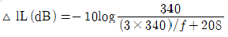
를 이용하여 계산한다.)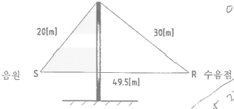
- 약 8
- 약 12
- 약 24
- 약 48
(정답률: 알수없음)
26. 그림과 같이 내경 6cm, 두께 2mm인 관끝 무반사관 도중에 직경 1cm의 작은 구멍이 10개 뚫린 관을 내경 15cm, 길이 30cm의 공동과 조합할 때의 공명주파수는? (단, 작은 구멍의 보정길이=내관+구멍 반지름×1.6으로 하며, 음속은 344m/s로 한다.)
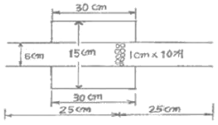
- 187Hz
- 233Hz
- 256Hz
- 278Hz
(정답률: 알수없음)
27. 다음 중 소음기의 성능을 표시하는 용어에 관한 정의로 옳지 않은 것은?
- 삽입손실치(IL):소음원에 소음기를 부착하기 전과 후의 공간상 어떤 특정 위치에서 측정한 음압레벨의 차와 그 측정위치로 정의한다.
- 투과손실치(TL):소음기에 입사한 음향출력에 대한 소음기에 투과된 음향출력의 비를 자연대수로 취한 값으로 정의된다.
- 감쇠치(△L):소음기 내의 두 지점 사이의 음향파워의 감쇠치로 정의한다.
- 동적삽입손실치(DIL):정격유속(reted flow) 조건하에서 측정하는 것을 제외하고는 삽입 손실치와 똑같이 정의된다.
(정답률: 알수없음)
28. 실정수가 126m2인 방에 음향파워레벨이 123dB인 음원이 있을 때 실내(확산음장)의 평균 음압레벨(dB)은? (단, 음원은 전체 내면의 반사율이 아주 큰 잔향실 기준)
- 92dB
- 97dB
- 100dB
- 108dB
(정답률: 알수없음)
29. 40m×12m인 콘크리트 벽의 투과손실은 47dB이며, 이 벽의 중앙에 크기 3m×7m의 문을 달아 총합 투과손실이 38dB되게 하고자 할 때 이 문의 투과손실은?
- 약 15dB
- 약 20dB
- 약 25dB
- 약 30dB
(정답률: 알수없음)
30. 다음은 간섭형 소용기에 관한 설명이다. ()안에 가장 적합한 것은?
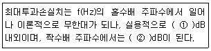
- ① 5, ② 50
- ① 5, ② 0
- ① 20, ② 50
- ① 20, ② 0
(정답률: 알수없음)
31. 실내의 평균흡음률을 구하는 방법과 거리가 먼 것은?
- 계산에 의한 방법으로 실내의 평균흡음율을 계산한다.
- 잔향시간을 측정하는 방법으로 평균흡음율을 구한다.
- 정재파법을 이용하여 실내의 평균흡음률을 구한다.
- 이미 알고 있는 표준음원에 의한 방법으로 계산한다.
(정답률: 알수없음)
32. 흡음율이 0.4인 흡음재를 사용하여 내경 40cm의 원형직관 흡음덕트를 만들었다. 이 덕트의 감쇠량이 15dB일 때 흡음덕트의 길이는 대략 얼마인가? (단, K=α-0.1 적용)
- 3m
- 4m
- 5m
- 6m
(정답률: 알수없음)
33. A공장의 내부 표면적 800m2, 평균흠음률은 0.06일 때 이 공장의 평균음압레벨을 10dB 저강하기 위해서 필요한 평균흡음율은? (단, 저강향
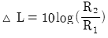
(dB)를 이용한다.)- 0.14
- 0.27
- 0.39
- 0.47
(정답률: 알수없음)
34. 밀도가 950kg/m3인 단일벽체(두께:25cm)에 600Hz의 순음이 통과할 때의 투과손실(TL)은? (단, 음파는 벽면에 난입사 한다.)
- 49dB
- 52dB
- 55dB
- 58dB
(정답률: 알수없음)
35. 차음대책 및 유의사항으로 가장 거리가 먼 것은?
- 벽체의 면밀도가 큰 재료를 선택하는 것이 유리하다.
- 흡음도 처음에 많은 도움이 되므로 차음재의 음원측에 흡음재를 붙인다.
- 콘크리트 목록 블록을 차음벽으로 사용하는 경우에는 표면에 모르타르 마감을 하지 않는 것이 더욱 높은 차음표과를 기대할 수 있다.
- 단일벽보다는 중공을 잦은 이중벽을 사용하는 것이 훨씬 더 효과적이나, 일치주파수와 공명주파수에 유의하여야 한다.
(정답률: 알수없음)
36. 벽체 외부로부터 확산음이 입사되고 있고, 이 확산음의 음압레벨은 150dB이다. 실내의 흡음력은 30m2, 벽의 투과손실은 30dB, 벽의 면적이 20m2이면 실내의 음압레벨은?
- 96dB
- 100dB
- 124dB
- 135dB
(정답률: 알수없음)
37. 두 개의 다른 재질로 된 벽 A, B가 있다. 벽 A의 면적은 7m2, 벽 B의 면적은 3m2이며, 각각 투과손실 30dB, 20dB이다. 벽 전체의 총합투과손실은?
- 21.7dB
- 24.3dB
- 28.5dB
- 34.3dB
(정답률: 알수없음)
38. 방음벽 설계시 유의점에 관한 설명으로 가장 거리가 먼 것은?
- 방음벽에 의한 실용적인 삽입손실치의 한계는 점음원일 때 25dB, 선음원일 때 21dB정도이며, 실제로는 5~15dB
- 음원의 지향성이 수음축 방향으로 클 때에는 벽에 의한 감쇠치가 계산치보다 크게 된다.
- 변의 투과손실은 회절감쇠치보다 적어도 5dB 이상 크게 하는 것이 바람직하다.
- 벽의 길이는 점음원 일 때 벽높이의 3배 이상, 선음원일 때 음원과 수음점 간의 직선거리 이상으로 하는 것이 바람직하다.
(정답률: 알수없음)
39. 건물벽 음향투과손실을 10dB 정도 증가시키고자 할 경우 벽두께는 기존 두께보다 약 몇 배로 증가시켜야 하는가? (단, 음파는 균일한 건물벽(단일벽)에 난입사 한다.)
- 1.7배
- 2.8배
- 3.6배
- 4.8배
(정답률: 알수없음)
40. 다음 흡음재료 중 동일 종류의 재료에서 두꺼울수록 중저음역의 흡음율이 높아지는 다공질 재료의 분류에 해당되지 않는 것은?
- 글라스물
- 발포수지재료
- 뿜칠성유재료
- 유공알알루미늄판
(정답률: 알수없음)
3과목: 소음진동 공정시험 기준
41. 철도진동한도 측정방법으로 옳지 않은 것은?
- 진동레벨계의 감각보정회로는 별도 규정이 없는 한 V특성(수직)에 고정하여 측정하여야 한다.
- 열차통과시마다 최고진동레벨이 배경진동레벨보다 최소 5dB이상 큰 것에 한하여 연속 10개 열차(상하행 포함) 이상을 대상으로 최고진동레벨을 측정ㆍ기록하고, 그 중 중앙값 이상을 산술평가한 값을 철도진동레벨로 한다.
- 기상조건, 열차의 운행횟수 및 속도 등을 고려하여 당해지역의 1시간 평균 철도 통행량 이상인 시간대에 측정한다.
- 요일별로 진동 변동이 큰 평일(월요일부터 금요일사이)에 당해지역의 철도진동을 측정하여야 한다.
(정답률: 알수없음)
42. 다음은 철도소음한도 측정방법 중 측정조건에 관한 사항이다. ()안에 가장 알맞은 것은?
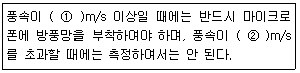
- ① 0.5, ② 2
- ① 1 ② 2
- ① 1 ② 5
- ① 2 ② 5
(정답률: 알수없음)
43. 다음은 L10진동레벨 계산방법이다. ()안에 알맞은 것은?
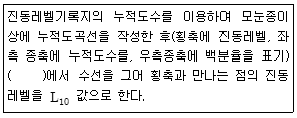
- 10% 횡선이 누적도곡선과 만나는 과정
- 50% 횡선이 누적도곡선과 만나는 과정
- 80% 횡선이 누적도곡선과 만나는 과정
- 90% 횡선이 누적도곡선과 만나는 과정
(정답률: 알수없음)
44. 환경기준 중 소음측정방법에서 측정점 선정기준으로 옳지 않은 것은?
- 목외측정을 원칙으로 한다.
- “일반지역”은 당해지역의 소음을 대표할 수 있는 장소로 한다.
- 건축물이 보도가 없는 도로에 접해 있는 경우에는 도로단에서 측정한다. 다만, 상시측적용의 경우 측정높이는 주변환경, 통행, 측수 등을 고려하여 지면위 0.5m 높이로 한다.
- “일반지역”의 경우에는 가능한 한 측정점 반경 3.5m 이내에 장애물(담, 건물, 기타 반사성 구조물 등)이 없는 지점의 지면위 1.2~1.5m로 한다.)
(정답률: 알수없음)
45. 소음 측정기기의 구조별 성능에 관한 설명으로 옳지 않은 것은?
- 출력단자(monitor out)는 소음신호를 기록기 등에 전송할 수 있는 고유단자를 갖춘 것이어야 한다.
- 지시계기(meter)는 지칭형인 경우 유효지시범위가 이상이어야 한다.
- 교정장치(calibration network calibrator)는 80dB(A) 이상이 되는 환경에서도 교정이 가능하여야 한다.
- 청강보정회로(weighting notworks)는 A특성을 갖춘 것이어야 한다.
(정답률: 알수없음)
46. 발파소음 측정자료 평가표 서식에 기재되어야 하는 사항으로 거리가 먼 것은?
- 천공장 깊이
- 폭약의 종류
- 발파횟수
- 측정기기의 부속장치
(정답률: 알수없음)
47. 다음 중 소음배출 허용기준에 사용되는 단위는?
- dB(A)
- dV(V)
- sone
- W/m2
(정답률: 알수없음)
48. 다음은 항공기 소음한도 측정조건에 관한 설명이다. ()안에 가장 적합한 것은?
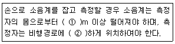
- ① 0.5, ② 수평
- ① 1.5, ② 수평
- ① 0.5, ② 수직
- ① 1.5, ② 수직
(정답률: 알수없음)
49. 규정에도 불구하고 생활소음 측정시 피해가 예상되는 곳의 부지경계선보다 3층 소음도가 더 클 경우 측정점은 거실창문 밖의 몇 m 떨어진 지점으로 해야 하는 것이 가장 적합한가?
- 0.5~1.0m
- 2.0~2.5m
- 2.5~3.0m
- 3.5~5.0m
(정답률: 알수없음)
50. 진동레벨 측정을 위해 성능기준 중 진동픽업의 횡감도 성능 기준은?
- 규정주파수에서 수감축 감도에 대한 차이가 1dB 이상이어야 한다.(연직특성)
- 규정주파수에서 수감축 감도에 대한 차이가 5dB 이상이어야 한다.(연직특성)
- 규정주파수에서 수감축 감도에 대한 차이가 10dB 이상이어야 한다.(연직특성)
- 규정주파수에서 수감축 감도에 대한 차이가 15dB 이상이어야 한다.(연직특성)
(정답률: 알수없음)
51. 환경기준 중 소음측정을 위한 측정점 선정기준 중 도로변 지역범위 기준으로 옳은 것은?
- 도로단으로부터 차선수×5m로 하고, 고속도로 또는 자동차 전용도로의 경우에는 도로단으로부터 100m이내의 지역을 말한다.
- 도로단으로부터 차선수×5m로 하고, 고속도로 또는 자동차 전용도로의 경우에는 도로단으로부터 150m이내의 지역을 말한다.
- 도로단으로부터 차선수×10m로 하고, 고속도로 또는 자동차 전용도로의 경우에는 도로단으로부터 100m이내의 지역을 말한다.
- 도로단으로부터 차선수×10m로 하고, 고속도로 또는 자동차 전용도로의 경우에는 도로단으로부터 150m이내의 지역을 말한다.
(정답률: 알수없음)
52. 대상소음도를 구하기 위해 배경소음의 영향이 있는 경우, 그 보정치 산정식으로 옳은 것은? (단, d:측정소음도-배경소음도)
- -10log(1-0.1-0.3/d)
- -10log(1-0.1-0.1d)
- -10log(1-10-0.3/d)
- -10log(1-10-0.1d)
(정답률: 알수없음)
53. 배출허용기준 측정 시 진동픽업의 설치장소로 옳지 않은 곳은?
- 온도, 자기, 전기 등의 외부영향을 받지 않는 곳
- 완충물이 충분히 확보될 수 있는 곳
- 경사 또는 요철이 없는 곳
- 충분히 다져서 단단히 굳은 곳
(정답률: 알수없음)
54. 다음은 소음계 성능기준이다. ()안에 알맞은 것은?
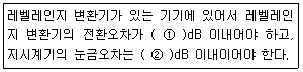
- ① 0.5, ② 0.5
- ① 0.5, ② 1.0
- ① 1.0, ② 0.5
- ① 1.0, ② 1.0
(정답률: 알수없음)
55. 도로교통진동한도를 디지털 진동자동분석계를 사용하여 측정자료를 분석하는 방법으로 옳은 것은?
- 샘플주기를 0.1초 이내에서 결정하고 5분이상 측정하여 자동연산ㆍ기록한 80% 범위의 상단치인 L10값을 그 지점의 측정진동레벨로 한다.
- 샘플주기를 0.1초 이내에서 결정하고 5분이상 측정하여 자동연산ㆍ기록한 90% 범위의 상단치인 L10값을 그 지점의 측정진동레벨로 한다.
- 샘플주기를 1초 이내에서 결정하고 5분이상 측정하여 자동연산ㆍ기록한 80% 범위의 상단치인 L10값을 그 지점의 측정진동레벨로 한다.
- 샘플주기를 1초 이내에서 결정하고 5분이상 측정하여 자동연산ㆍ기록한 90% 범위의 상단치인 L10값을 그 지점의 측정진동레벨로 한다.
(정답률: 알수없음)
56. 총 50공의 발파공에 대해 각 공당 0.1초 간격으로 1회 지발발파 하였다. 보정발파횟수(N)에 따른 소음도 보정량은?
- 0dB
- +3dB
- +7dB
- +10dB
(정답률: 알수없음)
57. 표준음 발생기의 발생음의 오차 범위 기준으로 옳은 것은?
- ±10dB
- ±5dB
- ±1dB
- ±0.1dB
(정답률: 알수없음)
58. 측정자료 분석시 진동레벨계만으로 측정할 경우, 레벨계지시치의 변화촉이 5dB이내일 때 구간내 최대치부터 진동레벨의 크기순으로 10개를 산술 평균한 진동레벨을 측정진동레벨로 하지 않는 것은?
- 규제기준 중 생활진동 측정
- 배출허용기준 중 진동 측정
- 진동한도 중 철도진동 측정
- 진동한도 중 도로교통진도 측정
(정답률: 알수없음)
59. 다음 중 소음배출허용기준 측정을 위한 확정시각 및 측정지점수 선정기준으로 옳은 것은?
- 방시간대(22:00~06:00)에는 낮시간대에 측정한 측정지점에서 2시간 간격으로 2회 이상 측정하여 산술평가한 값을 측정소음도로 한다.
- 적절한 측정시각에 5지점 이상의 측정지점수를 선정ㆍ측정하여 산술평균한 소음도를 측정소음도로 한다.
- 피해가 예상되는 적절한 측정시각에 2지점 이상의 측정지점수를 선정ㆍ측정하여 그 중 가장 높은 소음도를 측정소음도로 한다.
- 낮시간대는 2시간 간격을 두고 1시간씩 2회 측정하여 산술평균하며, 밤시간대는 1회 1시간 동안 측정한다.
(정답률: 알수없음)
60. 7일간의 항송기소음의 일별 WECPNL이 85, 86, 90, 88, 83, 73, 67인 경우 7일간의 평균 WECPNL은?
- 82
- 84
- 86
- 89
(정답률: 알수없음)
4과목: 진동방지기술
61. 다음 방진재료에 대한 설명으로 가장 거리가 먼 것은?
- 방빈고무의 역학적 성질은 천연고무가 가장 우수하지만 내유성을 필요로 할 때에는 천연고무가 바람직하지 않다.
- 금속스프링 사용 시 서어징이 발생하기 쉬우므로 주의해야 한다.
- 금속스프링은 저주파 차진에 좋다.
- 금속스프링의 동적배율을 방진고무보다 높다.
(정답률: 알수없음)
62. 무게 10N인 물체가 스프링징수 15N/cm인 스프링에 매달려 있다고 한다. 이 계의 고유각진동수(ωn)는?
- 28.3 rad/sec
- 32.3 rad/sec
- 38.3 rad/sec
- 42.3 rad/sec
(정답률: 알수없음)
63. 그림과 같이 스프링정수 K1, k2인 스프링 막대 AB와 병렬 연결해서 막대를 a, b의 비로 나누는 점 0에 하중 W을 달 때 합성 스프링정수(k0)는?
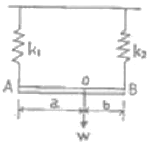
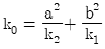
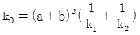
- k0=k1+k2
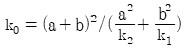
(정답률: 알수없음)
64. 무게 500N인 기계를 4개의 스프링으로 탄성지지한 결과 스프링의 정적수축량이 2.5cm였다. 이 스프링 점수를 구하면?
- 5N/mm
- 10N/mm
- 50N/mm
- 200N/mm
(정답률: 알수없음)
65. 아래 그림과 같이 놓여진 물체가 진동할 때의 고유 진동수는?
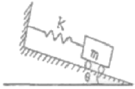
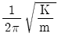
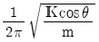
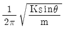
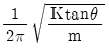
(정답률: 알수없음)
66. 질량 m, 댐핑상수 C인 댐퍼, 그리고 스프링정수 k인 기계구조에서 진동 주파수(고유 주파수, fn)는? (단, 댐핑이 충분히 적을 경우)
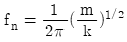
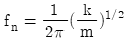
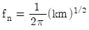
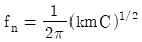
(정답률: 알수없음)
67. 감쇠가 없는 계에서 진폭이 이상할 정도로 크게 나타날 때의 원인은?
- 고유진동수와 강제진동수 간에 아무런 관계가 없다.
- 고유진동수가 강제진동수보다 현저하게 작다.
- 고유진동수가 강제진동수보다 현저하게 크다.
- 고유진동수가 강제진동수가 일치되어 있다.
(정답률: 알수없음)
68. X+9X=3sin6t로 표시되는 비감쇠 강제진동에서 정상 상태진동의 진폭은? (단, 진폭의 단위는 cm이다.)
- 0.11cm
- 0.22cm
- 0.33cm
- 0.44cm
(정답률: 알수없음)
69. 다음 중 진동 절연재료로서 특성임피던스(Z)가 가장 낮은 것은?
- 고무
- 콘크리트
- 알루미늄
- 철
(정답률: 알수없음)
70. 특성 임피던스 32×105kg/m2ㆍsec인 금속관 플렌지접속부에 특성 임피던스 3×104kg/m2ㆍsec인 고무를 넣어 진동 절연할 때 진동감쇠량(dB)은?(오류 신고가 접수된 문제입니다. 반드시 정답과 해설을 확인하시기 바랍니다.)
- 22
- 24
- 27
- 29
(정답률: 알수없음)
71. 매분 600회전으로 돌고 있는 자축의 정적 불균형력은 그림에서 반경 1.0m의 원주상을 1kg의 질량이 회전하고 있는 것에 상당한다고 할 때 등가가진력의 최대치는 약 몇 N인가?
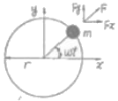
- 600
- 400
- 200
- 100
(정답률: 알수없음)
72. 외부에서 가해지는 강제진동수(f)와 계의 고유진동수(fn)의 비에 따라 변화하는 진동전달율에 관한 설명으로 옳지 않은 것은?
- f/fn=1일 때:공진상태이므로 전달율이 최대가 된다.
- f/fn＜√2일 때:항상 전달력은 강제력보다 작다.
- f/fn=√2일 때:전달력은 외력과 같다.
- f/fn＞√2일 때:차진이 유효한 영역이다.
(정답률: 알수없음)
73. 질량 125kg의 기계가 600rpm으로 운전되며, 1회전시마다 불평형력이 상하방향으로 적용한다. 스프링 4개를 병렬로 사용하여 진동전달손실 10dB를 얻고자 할 때 스프링 1개의 스프링정수(kN/cm)는?
- 62
- 123
- 247
- 493
(정답률: 알수없음)
74. 그림과 같이 물 위에 수직으로 떠있는 원통체의 지름을 D, 질량을 m이라 한다. 원통을 물 속에 조금 밀어 넣었다가 놓아주면 이 운동의 주기(r)는? (단, 원통의 단면적은 A, 물의 비중량은 p라 하고, 물의 기타운동조건 등은 고려하지 않는다.)
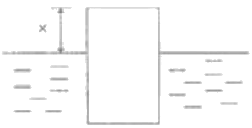
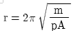
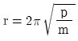
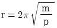
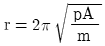
(정답률: 알수없음)
75. 그림과 같이 질량 m인 물체가 외팔보의 자유단에 달려있을 때 계의 진동의 고유진동수를 구하는 식으로 옳은 것은? (단, 보의 무게는 무시, 보의 길이는 L, 요곡강도는 El)
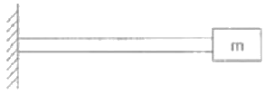
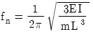
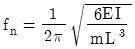
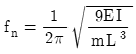
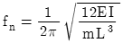
(정답률: 알수없음)
76. 다음 중 내부 감쇠계수가 가장 큰 지반의 종류는?
- 점토
- 모래
- 자갈
- 암석
(정답률: 알수없음)
77. 운동방정식이 mx+Cex+kx=0으로 표시되는 감쇠 자유진동에서 감쇠비를 나타내는 식으로 옳지 않은 것은? (단, Ce:감쇠 계수, ωn:고유각진동수)
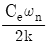
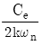
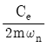
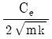
(정답률: 알수없음)
78. 정현진동의 가속도 진폭이 3×10-3m/s3일 때 진동 가속도 레벨(VAL)은? (단, 기준 10-5m/s2)
- 약 34dB
- 약 40dB
- 약 47dB
- 약 67dB
(정답률: 알수없음)
79. 계수여진진동에 관한 설명으로 옳지 않은 것은?
- 대표적인 예는 그네로서, 그네가 1 행정하는 동안 사람 몸의 자세는 2 행정을 하게 된다.
- 가진력의 주파수와 계의 고유진동수(계수여진진동 주파수)가 거의 같을 때 크게 진동한다.
- 근본적인 대책은 질량 및 스프링 특성의 시간적 변동을 없애는 것이다.
- 회전하는 편평축의 진동, 왕복운동기계의 크랭크축계의 진동도 계수여진진동에 속한다.
(정답률: 알수없음)
80. 코일스프링의 스프링정수(N/mm)를 구하는 식으로 옳은 것은? (단, D:코일의 평균직경(mm), d:소선의 직경(mm), G:소선의 전단탄성율(N/mm2), n:코일의 유효권수)
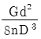
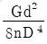
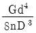
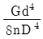
(정답률: 알수없음)
5과목: 소음진동 관계 법규
81. 환경정책기본법상 국가환경종합계획에 포함되어야 할 사항으로 가장 거리가 먼 것은? (단, 그 밖의 부대사랑은 제외)
- 인구ㆍ산업ㆍ경제ㆍ토지 및 해양의 이용 등 환경변화 여건에 관한 사항
- 환경오염 배출업소 지도ㆍ단속 계획
- 시업의 시행에 소요되는 비용의 산정 및 재원 조달방법
- 환경오염원ㆍ환경오염도 및 오염물질 배출량의 예측과 환경오염 및 환경훼손으로 인한 환경질의 변화전망
(정답률: 알수없음)
82. 소음진동관리법규상 옥외에 설치한 확성기에 생활소음 규제기준으로 옳은 것은? (단, 주거지역이며, 시간대응 22:00~5:00이다.)
- 60dB(A)이하
- 65dB(A)이하
- 70dB(A)이하
- 80dB(A)이하
(정답률: 알수없음)
83. 소음진동관리법규상 소음도 표지의 색상기준으로 옳은 것은?
- 노란색판에 검은색 문자
- 초록색판에 검은색 문자
- 흰색판에 검은색 문자
- 회색판에 검은색 문자
(정답률: 알수없음)
84. 소음진동관리법규상 특정공사의 사전신고 대상 기계ㆍ장비의 종류에 해당되지 않는 것은?
- 항타항발기(압입식 항타항발기는 제외한다.)
- 덤프트럭
- 공기압축기(공기토출량이 분당 2.83세제곱미터 이상의 이동식인 것으로 한정한다.)
- 발전기
(정답률: 알수없음)
85. 소음진동관리법규상 놀임지역의 저녁시간대 공장소음 배출허용기준으로 옳은 것은?
- 60dB(A)이하
- 55dB(A)이하
- 50dB(A)이하
- 45dB(A)이하
(정답률: 알수없음)
86. 소음진동관리법규상 과태료 부과기준으로 옳지 않은 것은?
- 소음기 또는 소음덮개를 떼어버리거나 경음기를 추가로 부착한 경우 1차 위반시 과태료 금액은 60만원이다.
- 이동소음원의 사용금지 또는 제한조치를 위반한 경우 3차 위반시 과태료 금액은 10만원이다.
- 위반행위의 횟수에 따른 부과기준은 최근 1년간 같은 위반행위로 부과처분을 받은 경우에 적용한다.
- 부과권자는 위반행위의 동기와 그 결과 등을 고려하여 과태료 금액의 100% 범위에서 강경할 수 있다.
(정답률: 알수없음)
87. 소음진동관리법규상 소음발생건설기계의 종류기준으로 옳지 않은 것은?
- 발전기(정격출력 500kW 미만의 실외용으로 한정한다.)
- 굴삭기(정격출력 19kW 이상 500kW미만의 것으로 한정한다.)
- 로더(정격출력 19kW 이상 500kW미만의 것으로 한정한다.)
- 브레이커(휴대용을 포함하여, 중량 5톤 이하로 한정한다.)
(정답률: 알수없음)
88. 환경정책기본법령상 낮시간대 전용공업지역의 소음환경 기준은? (단, 지역구분은 일반지역에 한한다.)
- 50LcqdB(A)
- 55LcqdB(A)
- 65LcqdB(A)
- 70LcqdB(A)
(정답률: 알수없음)
89. 소음진동관리법규상 환경시술인을 두어야 할 사업장 및 그 자격기준으로 옳지 않은 것은?
- 총동력합계 5,000마력 미만인 사업장은 사업자가 해당 사업장의 배출시설 및 방지시설 업무에 종사하는 피고용인 중에서 임명하는 자를 환경기술인으로 둔다.
- 총동력 합계는 소음배출시설 중 기계ㆍ기수의 마력의 총합계와, 대수기준시설 및 기계ㆍ기구와 기타 시설 및 기계ㆍ기구를 포함한다.
- 환경기술인 자격기준 중 소음ㆍ진동기사 2급(산업기사)은 기계분야기사ㆍ전기분야기사 각 2급(산업기사)이상의 지격소지자로서 환경 분야에서 2년 이상 종사한 자로 대체할 수 있다.
- 환경기숭인으로 임명된 자는 해당 사업장에서 상시 근무하여야 한다.
(정답률: 알수없음)
90. 소음진동관리법규상 자동차제작자는 인증받은 자동차의 내용 중 환경부령으로 정하는 중요 사항을 변경하려면 변경인증을 받아야 하는데, 이 변경인증을 받지 아니하고 자동차를 제작한 자에 대한 벌칙 기준은?
- 3년 이하의 징역 또는 3천만원 이하의 벌금
- 1년 이하의 징역 또는 1천만원 이하의 벌금
- 6개월 이하의 징역 또는 500만원 이하의 벌금
- 500만원 이하의 벌금
(정답률: 알수없음)
91. 다음은 소음진동관리법규상 운행자 정기검사의 방법ㆍ기준 및 항목 중 경적소음측정에 관한 사항이다. ()안에 가장 적합한 것은?
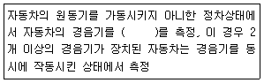
- 5초 동안 작동시켜 최대소음도
- 10초 동안 작동시켜 최대소음도
- 5초 동안 작동시켜 평균소음도
- 10초 동안 작동시켜 평균소음도
(정답률: 알수없음)
92. 소음진동관리법규상 운행자동차 중 중대형 승용자동차의 배기소음(dB(A)) 허용기준은? (단, 2006년 1월 1일 이후에 제작되는 자동차기준)
- 100이하
- 1⑤이하
- 110이하
- 112이하
(정답률: 알수없음)
93. 소음진동관리법규상 배출시설 및 방지시설 등과 관련된 행정처분기준 중 1차행정처분기준이 조업정지에 해당되는 위반사항은?
- 배출시설설치의 신고를 하지 아니하고 배출시설을 설치한 경우
- 배출시설설치의 허가를 하지 아니하고 배출시설을 설치한 경우
- 개선명령을 받은 자가 이를 이행하지 아니한 경우
- 배출허용기준은 초과한 공장에 대하여 개선명령을 하여도 당해 공장의 위치에서는 이를 이행할 수 없는 경우
(정답률: 알수없음)
94. 소음진동관리법규상 30마력 기준의 시설로서 진동배출시설 기준에 해당하지 않는 것은? (단, 동력을 사용하는 시설 및 기계ㆍ기구로 한정)
- 분쇄기(파쇄기와 마쇄기를 포함한다.)
- 목재가공기계
- 연탄제조용 운전기
- 단조기
(정답률: 알수없음)
95. 소음진동관리법규상 소음배출시설기준으로 옳지 않은 것은? (단, 마력기준시설 및 기계ㆍ기구)
- 10마력 이상의 송풍기
- 10마력 이상의 기계체
- 10마력 이상의 원심분리기
- 10마력 이상의 금속절단기
(정답률: 알수없음)
96. 다음은 소음진동관리법규상 자동차의 종류 기준이다. ()안에 가장 적합한 것은?
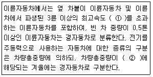
- ① 30km/h, ② 0.5톤 미만
- ① 30km/h, ② 1.5톤 미만
- ① 50km/h, ② 0.5톤 미만
- ① 50km/h, ② 1.5톤 미만
(정답률: 알수없음)
97. 소음진동관리법규상 자동차 소유자가 운행지자에 대한 정기검사를 받을 때의 검사사항과 거리가 먼 것은?
- 해당 자동차에서 나오는 소음이 운행자 소음허용기준에 적합한지 여부
- 소음기나 소음덮개를 떼어버렸는지 여부
- 소음기를 추가로 붙였는지의 여부
- 경음기를 추가로 붙였는지의 여부
(정답률: 알수없음)
98. 소음진동관리법규상 생활소음ㆍ진동이 발생하는 특정공사로서 “환경부령으로 정하는 중요한 사항” 변경으로 인한 특정공사 변경신고 대상기준에 해당하지 않는 것은?
- 특정공사 사전신고 대상 기계ㆍ장비의 20퍼센트 이상의 증가
- 특정공사 기간의 연장
- 소음ㆍ진동 저감대책의 변경
- 공사 규모의 10퍼센트 이상 확대
(정답률: 알수없음)
99. 소음진동관리법규상 인증을 언제할 수 있는 자동차에 해당하는 것은?
- 국가대표 훈련용으로 사용하기 위하여 반입하는 자동차로서 문화체육광광부장관의 확인을 받은 자동차
- 주한 외국군인이 사용하기 위하여 반입하는 자동차
- 외국에서 1년 이상 거주한 내국인이 주거를 이전하기 위하여 이주물품으로 반입하는 1대의 자동차
- 방송용 등 특수한 용도로 사용되는 자동차로서 환경부장관이 정하여 고시하는 자동차
(정답률: 알수없음)
100. 다음은 소음진동관리법규상 운행차 정기검사의 소음도 측정 방법 중 배기소음 측정기준이다. ()안에 알맞은 것은?
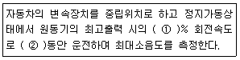
- ① 75, ② 4초
- ① 90, ② 4초
- ① 75, ② 30초
- ① 90, ② 30초
(정답률: 알수없음)